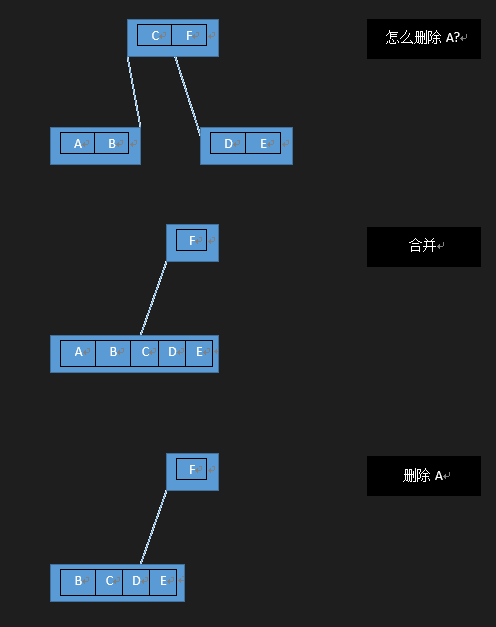
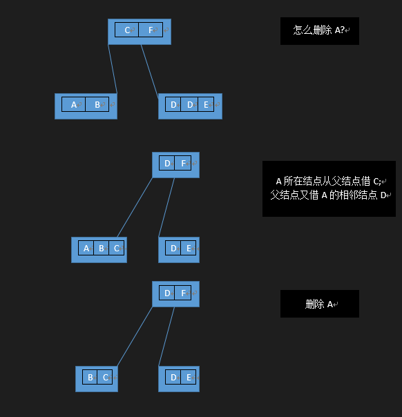

B-树
B树又写做B-树，做索引的时候，hash ，红黑树效率已经很高了，什么时候要用到B树？
B树的应用：当我们的内存不够支撑的时候，往往B树的效率更好。hash,红黑树都是基于内存内数据的高效查找。文件系统的索引，数据库的索引都是采用B树实现。
那为什么B树在磁盘访问的时候更高效呢？
原因：如果用二叉树，1024个节点，我们需要一个10层高的二叉树。10层高，就相当于我们需要访问10次磁盘才能找到相应值。磁盘的访问速度是远不如内存的。故二叉树性能会显得格外低，那我们必然会考虑到多叉树，如果是毫无约束的多叉树，树就可能变成一个链表，性能将降到最低状态。所以有必要对多叉树做适当的约束，而B树就是这样的一个自平衡的多叉树数据结构。
B树定义
一颗M阶B树T，满足以下条件
- 每个结点至多拥有M棵子树
- 根结点至少拥有两棵子树
- 除了根结点以外，其余每个分支结点至少拥有M/2棵子树
- 所有的叶子结点都在同一层上
- 有k棵子树的分支结点则存在k-1个关键字，关键字按照递增顺序进行排序
- 关键字数量满足 ceil(M/2) - 1 <= n <= M-11
1 | //定义M的值 |
插入
- 插入值，总是从根结点开始插入
- 插入结点长度 <M 直接插入
- 等于M 需要裂变，裂变从根结点开始裂变
- 创建一个空的结点
- 将裂变位置右边的给新结点，准备将裂变位置给父节点
- 遍历父节点从i位置开始全部右移一位，给裂变点空出位置
- 将裂变点赋值给父节点i位置
1 |
|
删除节点
- 找到删除节点位置
- 归并:把相邻两个节点+父节点的一个值 $\le M$,合二为一再删掉即可
当M为5的时候如下图：
 - 借值:把相邻两个节点+父节点的一个值 $> M$,将父节点拉下来，将子结点放父位置，再删除即可。
当M为5的时候如下图：
1
2
3
4
5
6
7
8
9
10
11
12
13
14
15
16
17
18
19
20
21
22
23
24
25
26
27
28
29
30
31
32
33
34
35
36
37
38
39
40
41
42
43
44
45
46
47
48
49
50
51
52
53
54
55
56
57
58
59
60
61
62
63
64
65
66
67
68
69
70
71
72
73
74
75
76
77
78
79
80
81
82
83
84
85
86
87
88
89
90
91
92
93
94
95
96
97
98
99
100
101
102
103
104
105
106
107
108
109
110
111
112
113
114
115
116
117
118
119
120
121
122
123
124
125
126
127
128
129
130
131
132
133
134
135
136
137
138
139
140
141
142
143
144
145
146
147
148
149
150
151
152
153
154
155
156
157
158
159
160
161
162
163
164
165
166
167//合并结点
void btree_merge(btree *T, btree_node *node, int idx) {
btree_node *left = node->childrens[idx];
btree_node *right = node->childrens[idx+1];
int i = 0;
/////data merge
left->keys[T->t-1] = node->keys[idx];
for (i = 0;i < T->t-1;i ++) {
left->keys[T->t+i] = right->keys[i];
}
if (!left->leaf) {
for (i = 0;i < T->t;i ++) {
left->childrens[T->t+i] = right->childrens[i];
}
}
left->num += T->t;
//destroy right
btree_destroy_node(right);
//node
for (i = idx+1;i < node->num;i ++) {
node->keys[i-1] = node->keys[i];
node->childrens[i] = node->childrens[i+1];
}
node->childrens[i+1] = NULL;
node->num -= 1;
if (node->num == 0) {
T->root = left;
btree_destroy_node(node);
}
}
//删除树T的node节点的key值
void btree_delete_key(btree *T, btree_node *node, KEY_VALUE key) {
if (node == NULL) return ;
int idx = 0, i;
while (idx < node->num && key > node->keys[idx]) {
idx ++;
}
if (idx < node->num && key == node->keys[idx]) {
if (node->leaf) {
for (i = idx;i < node->num-1;i ++) {
node->keys[i] = node->keys[i+1];
}
node->keys[node->num - 1] = 0;
node->num--;
if (node->num == 0) { //root
free(node);
T->root = NULL;
}
return ;
} else if (node->childrens[idx]->num >= T->t) {
btree_node *left = node->childrens[idx];
node->keys[idx] = left->keys[left->num - 1];
btree_delete_key(T, left, left->keys[left->num - 1]);
} else if (node->childrens[idx+1]->num >= T->t) {
btree_node *right = node->childrens[idx+1];
node->keys[idx] = right->keys[0];
btree_delete_key(T, right, right->keys[0]);
} else {
btree_merge(T, node, idx);
btree_delete_key(T, node->childrens[idx], key);
}
} else {
btree_node *child = node->childrens[idx];
if (child == NULL) {
printf("Cannot del key = %d\n", key);
return ;
}
if (child->num == T->t - 1) {
btree_node *left = NULL;
btree_node *right = NULL;
if (idx - 1 >= 0)
left = node->childrens[idx-1];
if (idx + 1 <= node->num)
right = node->childrens[idx+1];
if ((left && left->num >= T->t) ||
(right && right->num >= T->t)) {
int richR = 0;
if (right) richR = 1;
if (left && right) richR = (right->num > left->num) ? 1 : 0;
if (right && right->num >= T->t && richR) { //borrow from next
child->keys[child->num] = node->keys[idx];
child->childrens[child->num+1] = right->childrens[0];
child->num ++;
node->keys[idx] = right->keys[0];
for (i = 0;i < right->num - 1;i ++) {
right->keys[i] = right->keys[i+1];
right->childrens[i] = right->childrens[i+1];
}
right->keys[right->num-1] = 0;
right->childrens[right->num-1] = right->childrens[right->num];
right->childrens[right->num] = NULL;
right->num --;
} else { //borrow from prev
for (i = child->num;i > 0;i --) {
child->keys[i] = child->keys[i-1];
child->childrens[i+1] = child->childrens[i];
}
child->childrens[1] = child->childrens[0];
child->childrens[0] = left->childrens[left->num];
child->keys[0] = node->keys[idx-1];
child->num ++;
left->keys[left->num-1] = 0;
left->childrens[left->num] = NULL;
left->num --;
}
} else if ((!left || (left->num == T->t - 1))
&& (!right || (right->num == T->t - 1))) {
if (left && left->num == T->t - 1) {
btree_merge(T, node, idx-1);
child = left;
} else if (right && right->num == T->t - 1) {
btree_merge(T, node, idx);
}
}
}
btree_delete_key(T, child, key);
}
}
//删除节点key
int btree_delete(btree *T, KEY_VALUE key) {
if (!T->root) return -1;
//调递归删除接口
btree_delete_key(T, T->root, key);
return 0;
}
B+树
首先简单说明一下B+树：B+树通常用于数据库和操作系统的文件系统中。B+树的特点是能够保持数据稳定有序，其插入与修改拥有较稳定的对数时间复杂度。B+树元素自底向上插入，这与二叉树恰好相反，B+树只在叶子结点存储数据，其他结点只保存索引。
定义
B+树是B树的一种变形形式，B+树上的叶子结点存储关键字以及相应记录的地址，叶子结点以上各层作为索引使用。一棵m阶的B+树定义如下:
(1)每个结点至多有m个子女；
(2)除根结点外，每个结点至少有[m/2]个子女，根结点至少有两个子女；
(3)有k个子女的结点必有k个关键字。
B+树的查找与B树不同，当索引部分某个结点的关键字与所查的关键字相等时，并不停止查找，应继续沿着这个关键字左边的指针向下，一直查到该关键字所在的叶子结点为止。
插入
节点要处于违规状态，它必须包含在可接受范围之外数目的元素。
- 首先，查找要插入其中的节点的位置。接着把值插入这个节点中。
- 如果没有节点处于违规状态则处理结束。
- 如果某个节点有过多元素，则把它分裂为两个节点，每个都有最小数目的元素。在树上递归向上继续这个处理直到到达根节点，如果根节点被分裂，则创建一个新根节点。为了使它工作，元素的最小和最大数目典型的必须选择为使最小数不小于最大数的一半。
删除
- 首先，查找要删除的值。接着从包含它的节点中删除这个值。
- 如果没有节点处于违规状态则处理结束。
- 如果节点处于违规状态则有两种可能情况：
- 它的兄弟节点，就是同一个父节点的子节点，可以把一个或多个它的子节点转移到当前节点，而把它返回为合法状态。如果是这样，在更改父节点和两个兄弟节点的分离值之后处理结束。
- 它的兄弟节点由于处在低边界上而没有额外的子节点。在这种情况下把两个兄弟节点合并到一个单一的节点中，而且我们递归到父节点上，因为它被删除了一个子节点。持续这个处理直到当前节点是合法状态或者到达根节点，在其上根节点的子节点被合并而且合并后的节点成为新的根节点。
B+树与B-树比较
B+树的优势：
1.单一节点存储更多的元素，使得查询的IO次数更少。
2.所有查询都要查找到叶子节点，查询性能稳定。
3.所有叶子节点形成有序链表，便于范围查询。
B+树的劣势：
1.单点查询，B-树有可能O(1),而B+树永远是B-树的最糟糕情况O(log n).
注意
这也导致在通用sql数据库中B+树更合适
而在mongoDb中，B-树更合适，因为对范围查找要求较低